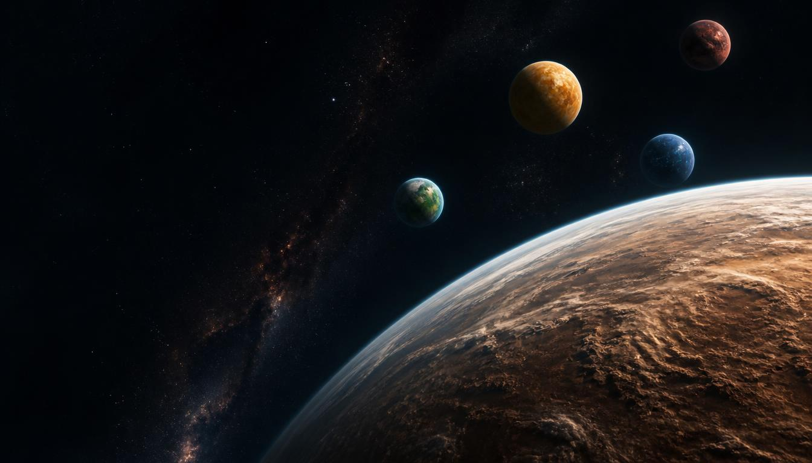
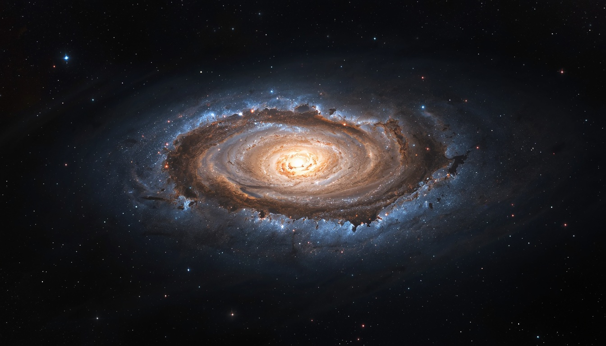
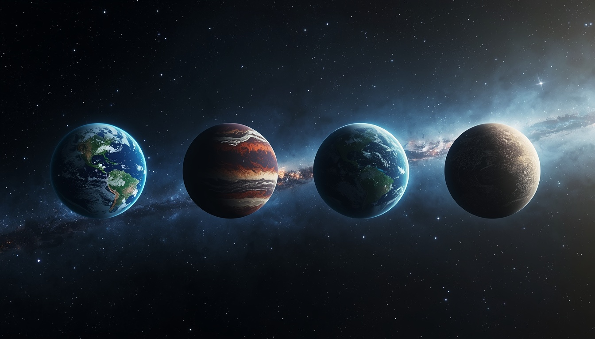

01
La ciencia
El universo real es nuestro punto de partida. La astronomía, la exploración espacial y la búsqueda de vida extraterrestre nos ayudan a entender qué sabemos y qué todavía desconocemos.

BIENVENIDO A
Un universo entre la ciencia y la imaginación.
EL UNIVERSO
GALATEA es un universo ficticio creado para explorar una pregunta que todavía no podemos responder: ¿qué podría existir más allá de lo que conocemos?
Aquí conviven mundos imaginarios, especies alienígenas y conceptos inspirados en la astronomía y en nuestra búsqueda de vida fuera de la Tierra.
GALATEA no pretende representar un lugar real. Es un espacio para imaginar cómo podrían ser otros mundos y, al mismo tiempo, aprender sobre el universo que sí conocemos.

DOS FORMAS DE EXPLORAR
GALATEA parte de preguntas reales para construir respuestas imaginarias.
El universo real es nuestro punto de partida. La astronomía, la exploración espacial y la búsqueda de vida extraterrestre nos ayudan a entender qué sabemos y qué todavía desconocemos.
Cuando la ciencia todavía no tiene una respuesta, GALATEA abre la puerta a imaginar posibilidades: nuevos mundos, nuevas especies y formas de vida completamente diferentes.

EL COMIENZO
GALATEA nació como un proyecto para aprender a crear páginas web.
Lo que comenzó como una práctica de HTML y CSS fue creciendo hasta convertirse en algo más: un universo que podemos seguir construyendo, ampliando y explorando.
Los primeros mundos de GALATEA son Lumia, Krynar, Layen y Portha.
Y esto es solamente el principio.
EL FUTURO
GALATEA todavía está en construcción.
Nuevos mundos, especies, historias y formas de interactuar con el universo podrán aparecer con el tiempo.
Algunas cosas todavía no están definidas. Y precisamente ahí está parte de la aventura.
Explora los mundos